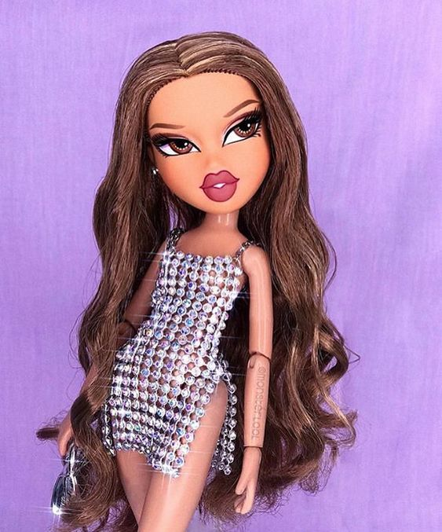
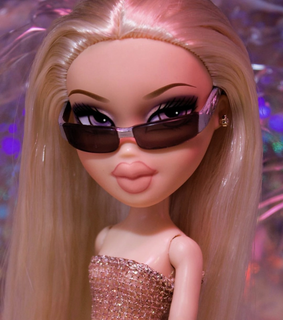
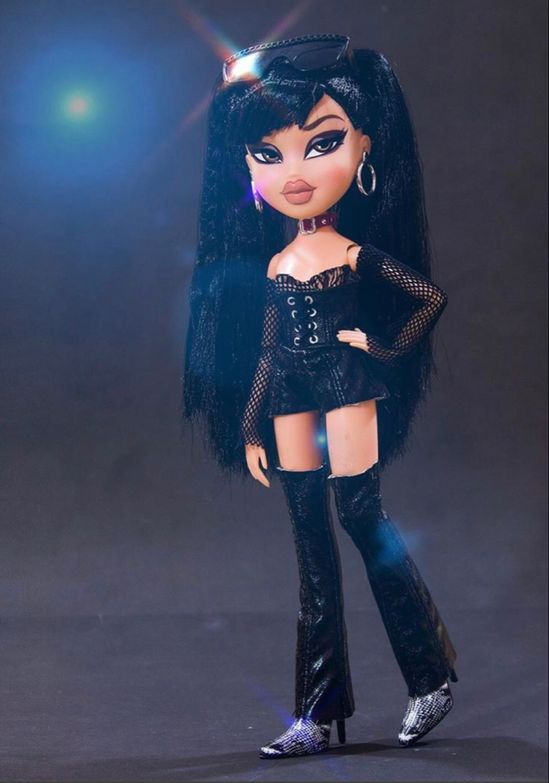
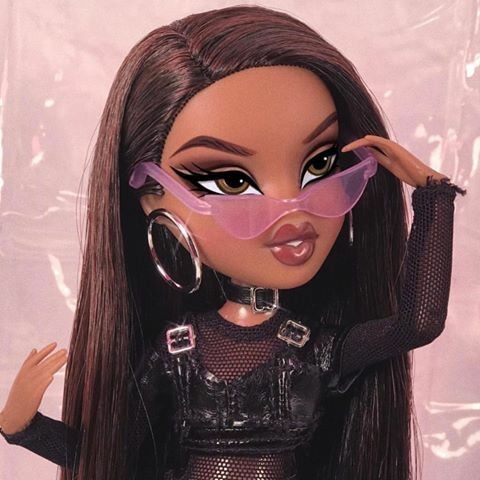

This i my personal favourit bratz, yasmin.
Yasmin was born and lives in Stilesville, California. She attends Stiles
High and volunteers at an animal shelter on the weekends. She is a
singer in the punk-rock band, Rock Angelz, the pop group, Space Angelz,
and is one of the founders of Bratz Magazine.
Apperance
Features
Yasmin has brown skin, and usually long light brown hair, although
the color depends on the line/movie she is, as she, along with the
other girls is known to dye her hair constantly, add and remove
highlights and wear wigs. She has pretty brown eyes and a beauty
mark on her left cheek.
Style
Yasmin has what she describes as a 'bohemian' style. She loves
prints and neutral colors, earth tones and mixing fabrics and
textures. She likes thrifting and mixing vintage clothing with newer
pieces.

This the bratz Cloe.
Cloe was born and lives in Stilesville, California. She attends Stiles
High and is a singer in the punk-rock band, Rock Angelz, the pop group,
Space Angelz, and is one of the founders of Bratz Magazine where she
writes a 'Dear Cloe' advice column.
Apperance
Features
Cloe has long blonde hair, blue eyes, and white skin. On occasion
she has been produced with freckles.
Style
Setting the coolest trends 24/7 may seem like a huge responsibility,
but for Cloe it's another day! With a fashion passion that includes
animals prints and shimmering and sparkling fabric, sporty outfits
and wild accessories.

This the bratz jade.
Jade was born and lives in Stilesville, California. She attends Stiles
High, is a singer in the punk-rock band, Rock Angelz and is one of the
founders of Bratz Magazine where she works as the fashion editor.
Apperance
Features
Jade has pale skin and big brown eyes. Sometimes, her eyes are
changed to green. Her long hair is jet black but is often streaked
with different colors, mainly, green, blue, pink and purple. She
often has bangs.
Style
Jade has a unique, yet trendy, sense of style. She enjoys shopping
at trendy boutiques and thrift shops and always manages to put
together very cool outfits. Jade is the ultimate fashionista because
of the way she takes chances with fashion and uses it to express
herself.
Jade seriously has a passion for over the top fashion and breaking
all the fashion rules, making her own path and doing what she wants.
Jade's style can be described like alt fashion; divergent but also
stylish.

This the bratz sasha.
Sasha was born and lives in Stilesville, California. She attends Stiles
High and works a part-time job at B-Hit Radio as a DJ. She is a singer
in the punk-rock band, Rock Angelz, the pop group, Space Angelz, and is
one of the founders of Bratz Magazine where she works as the music
editor.
Apperance
Features
Sasha has brown skin, long dark brown wavy hair and hazel-green
eyes. In earlier artwork she was often drawn with a widows peak and
bigger, thicker hair than the other girls.
Style
Taking cutting-edge streetwear to a whole new level, Sasha's fashion
passion of beanies and jeans recalls the heyday of hip-hop with all
the contempo cool of R&B soul!